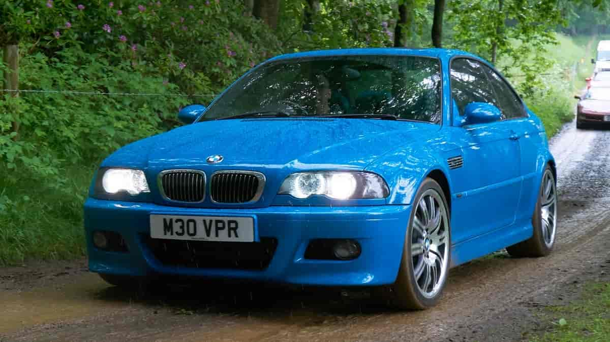
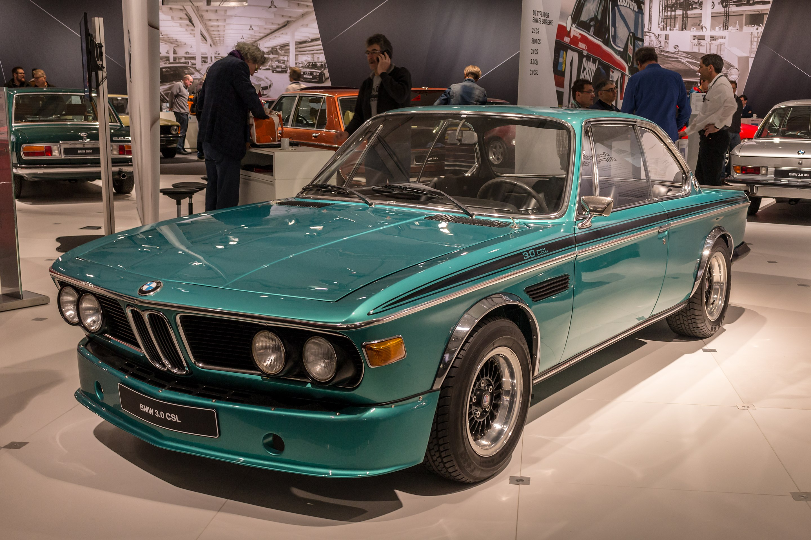
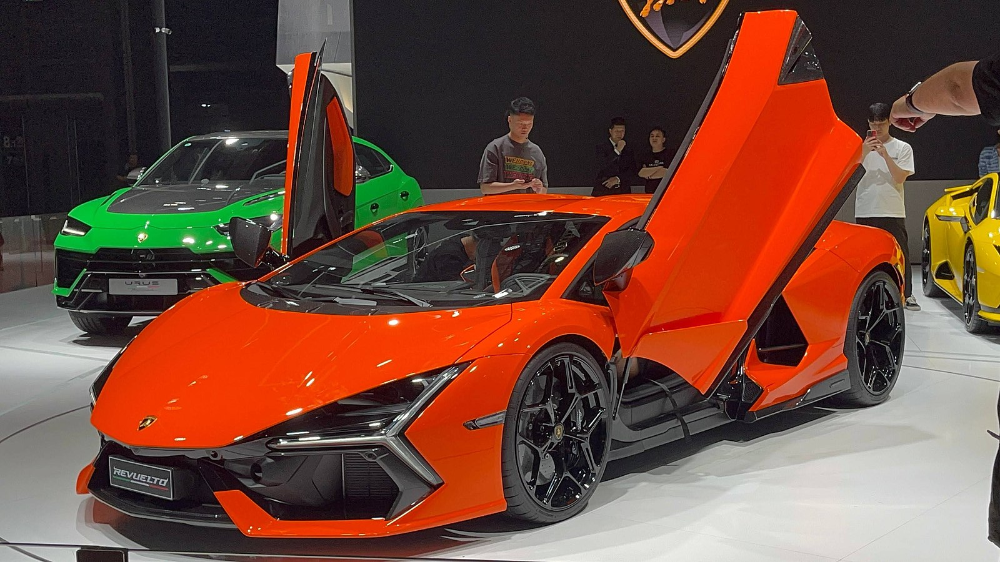
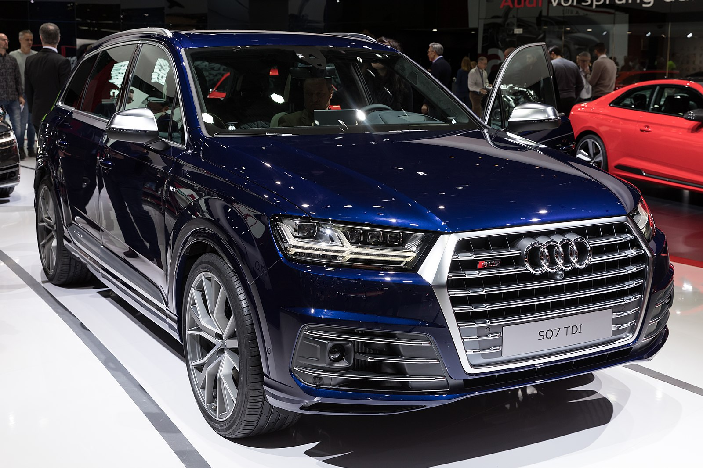
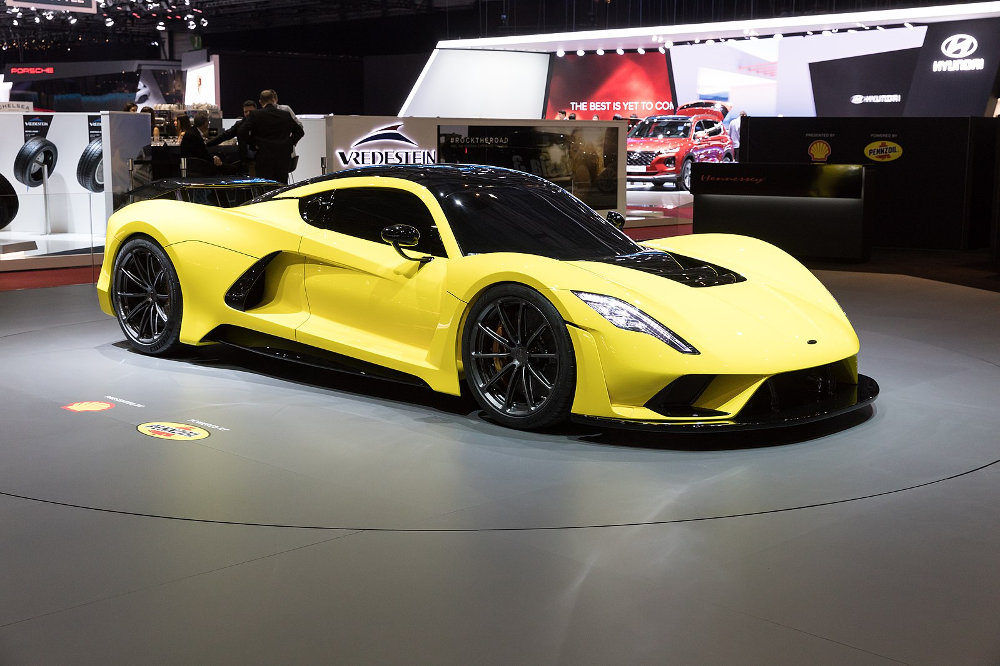
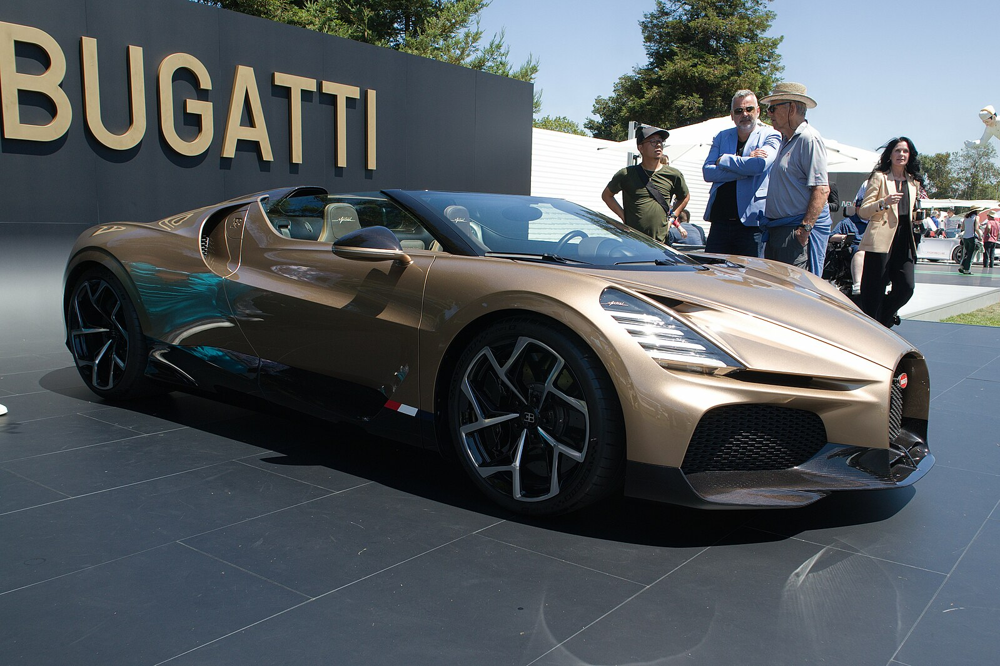
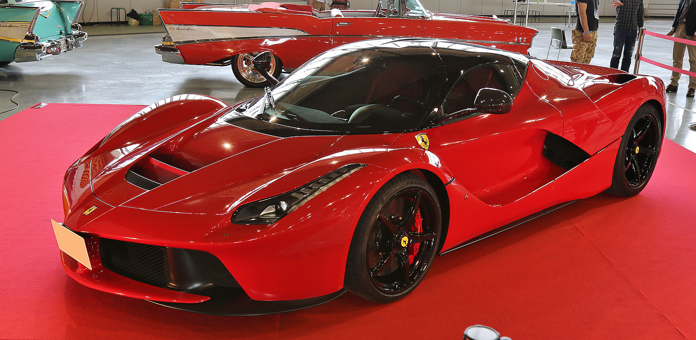
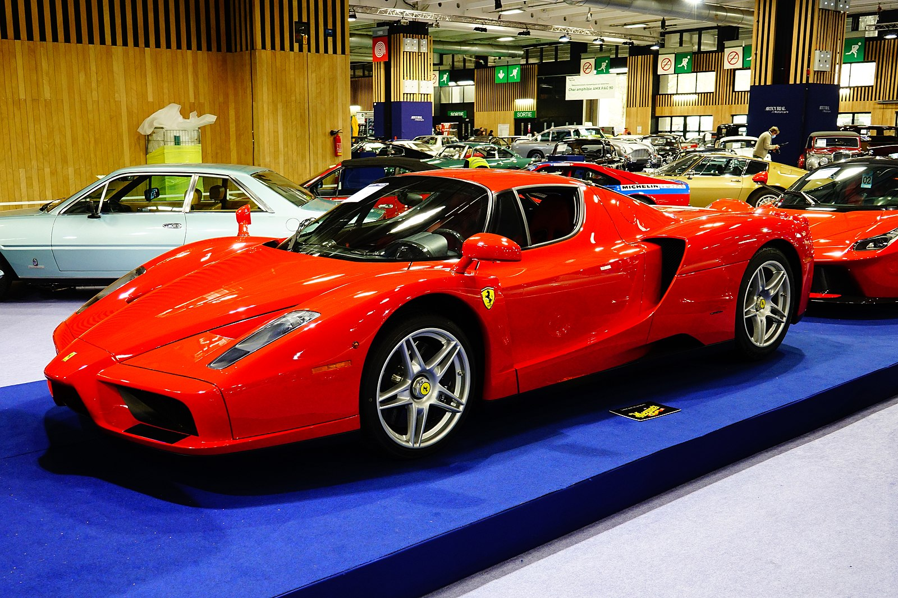
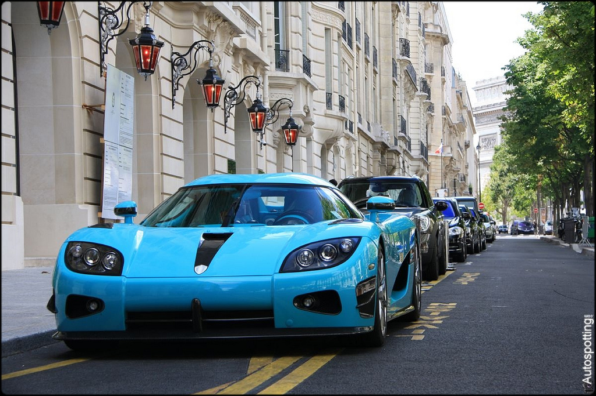
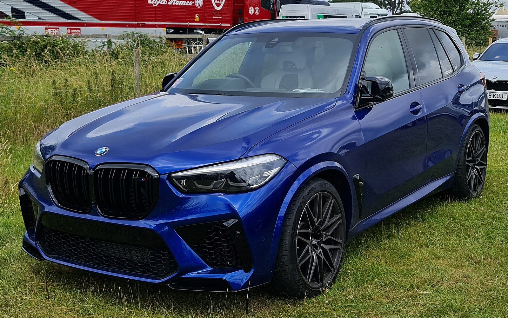

 bilde av en e46 bmw m3
Lisens: Falt i det fri (Public domain)
dette er det som står i lisenesen
Ingen opphavsrett
Dette verket har blitt identifisert som fri for kjente opphavsrettsbegrensninger, inklusive alle nærstående rettigheter.
Du kan kopiere, endre, distribuere og fremføre verket, også for kommersielle formål, uten å spørre om tillatelse. Se Annen Informasjon nedenfor.
 bilde av en bmw 3.0 csl
lisens: Matti Blume Eget verk CC BY-SA 4.0
dette er det som står i lisensen
You are free to:
Share — copy and redistribute the material in any medium or format for any purpose, even commercially.
Adapt — remix, transform, and build upon the material for any purpose, even commercially.
The licensor cannot revoke these freedoms as long as you follow the license terms.
 bilde av en lamborghini revuelto
lisens: Maxhdtenda https://commons.wikimedia.org/wiki/File:Lamborghini_Revuelto_IMG01.jpg
detter er det som står i lisense
You are free:
to share to copy, distribute and transmit the work
to remix to adapt the work
Under the following conditions:
attribution You must give appropriate credit, provide a link to the license, and indicate if changes were made. You may do so in any reasonable manner, but not in any way that suggests the licensor endorses you or your use.
share alike If you remix, transform, or build upon the material, you must distribute your contributions under the same or compatible license as the original.
bilde av en audi sq7
lisens: Matti Blume https://en.wikipedia.org/wiki/File:Geneva_International_Motor_Show_2018,_Le_Grand-Saconnex_%281X7A1497%29.jpg
dette er det som står i lisense
You are free:
to share to copy, distribute and transmit the work
to remix to adapt the work
Under the following conditions:
attribution You must give appropriate credit, provide a link to the license, and indicate if changes were made. You may do so in any reasonable manner, but not in any way that suggests the licensor endorses you or your use.
share alike If you remix, transform, or build upon the material, you must distribute your contributions under the same or compatible license as the original.
dette er bilde av en hennessey venom f5
lisens: Matti Blume https://commons.wikimedia.org/wiki/File:Hennessey_Venom_F5,_GIMS_2018,_Le_Grand-Saconnex_%281X7A1390%29.jpg
dette er det som står i lisense
You are free:
to share to copy, distribute and transmit the work
to remix to adapt the work
Under the following conditions:
attribution You must give appropriate credit, provide a link to the license, and indicate if changes were made. You may do so in any reasonable manner, but not in any way that suggests the licensor endorses you or your use.
share alike If you remix, transform, or build upon the material, you must distribute your contributions under the same or compatible license as the original.
dette er bilde av en bugatti mistral
lisens: Prova MO https://commons.wikimedia.org/wiki/File:Bugatti_Mistral_at_Quail_2023.jpg
dette er det som står i lisenese You are free: to share to copy, distribute and transmit the work to remix to adapt the work Under the following conditions: attribution You must give appropriate credit, provide a link to the license, and indicate if changes were made. You may do so in any reasonable manner, but not in any way that suggests the licensor endorses you or your use. share alike If you remix, transform, or build upon the material, you must distribute your contributions under the same or compatible license as the original.
dette er bilde av en ferrari laferrari
lisens: TTTNIS
dette er det som står i lisense
The person who associated a work with this deed has dedicated the work to the public domain by waiving all of their rights to the work worldwide under copyright law, including all related and neighboring rights, to the extent allowed by law. You can copy, modify, distribute and perform the work, even for commercial purposes, all without asking permission.
dette er bilde av en ferrari enzo
lisens: Y.Leclercq© https://commons.wikimedia.org/wiki/File:Ferrari_Enzo_-_R%C3%A9tromobile_2022.jpg
dette er det som står i lisense
You are free:
to share to copy, distribute and transmit the work
to remix to adapt the work
Under the following conditions:
attribution You must give appropriate credit, provide a link to the license, and indicate if changes were made. You may do so in any reasonable manner, but not in any way that suggests the licensor endorses you or your use.
share alike If you remix, transform, or build upon the material, you must distribute your contributions under the same or compatible license as the original.
dette er bilde av en koenigsegg CCXR
lisens: Autospotting Crew https://commons.wikimedia.org/wiki/File:Koenigsegg_CCXR_@_Paris_-_Flickr_-_Autospotting_Crew.jpg
dette er det som står i lisense
You are free:
to share to copy, distribute and transmit the work
to remix to adapt the work
Under the following conditions:
attribution You must give appropriate credit, provide a link to the license,
and indicate if changes were made. You may do so in any reasonable manner, but not in any way that suggests the licensor endorses you or your use.
dette er bilde av en BMW X5 M Competition
lisens: MrWalkr https://commons.wikimedia.org/wiki/File:Blyue_BMW_X5_M_FOS22.jpg
dette er det som står i lisense
You are free:
to share to copy, distribute and transmit the work
to remix to adapt the work
Under the following conditions:
attribution You must give appropriate credit, provide a link to the license, and indicate if changes were made. You may do so in any reasonable manner, but not in any way that suggests the licensor endorses you or your use.
share alike If you remix, transform, or build upon the material, you must distribute your contributions under the same or compatible license as the original.